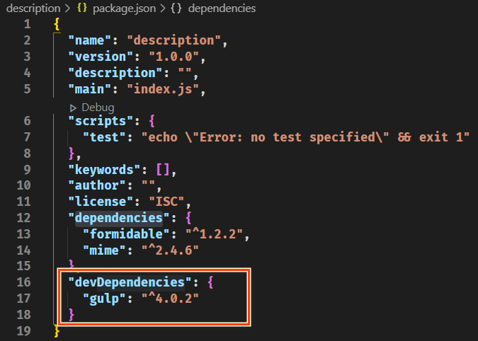

一、node_modules資料夾的問題
1.資料夾以及檔過多過碎，當我們將專案整體拷貝給別人的時候,，傳送速率會很慢很慢.
僅需package.json文件，而不用node_modules資料夾
2.複雜的模組依賴關係需要被記錄，確保模組的版本和當前保持一致，否則會導致當前項目運行報錯
使用
package-lock.json
文件來應用此問題
二、package.json檔的作用
使用
npm init -y
命令生成。
-y
指的是使用默認值
默認創建的package.json文件
package.json文件屬性說明
1.安裝formidable與mime並查看package.json
2.刪除node_modules資料夾
3.執行
npm install
將依據package.json中的dependencies，把第三方模塊重新下載至node_modules資料夾中
三、項目依賴
在專案的開發階段和線上運營階段，都需要依賴的協力廠商包，稱為專案依賴
使用npm install 包名命令下載的文件會默認被添加到 package.json 文件的 dependencies 欄位中
刪除node_modules資料夾後執行
npm install
--production
，只會將
dependencies
的第三方模塊重新下載至node_modules
四、開發依賴
在專案的開發階段需要依賴，線上運營階段不需要依賴的協力廠商包，稱為開發依賴
使用
npm install
包名
--save-dev
命令將包添加到package.json文件的
devDependencies
欄位中
刪除node_modules資料夾後執行
npm install
，會將
dependencies
與
devDependencies
的第三方模塊皆重新下載至node_modules

五、package-lock.json文件
鎖定包的版本，確保再次下載時不會因為包版本不同而產生問題
加快下載速度，因為該檔中已經記錄了專案所依賴協力廠商包的樹狀結構和包的下載位址，重新安裝時只需下載即可，不需要做額外的工作
六、別名的用法
1.創立app.js文件
2.package.json的scripts屬性內加入別名與指令
執行
npm run build
指令